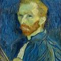
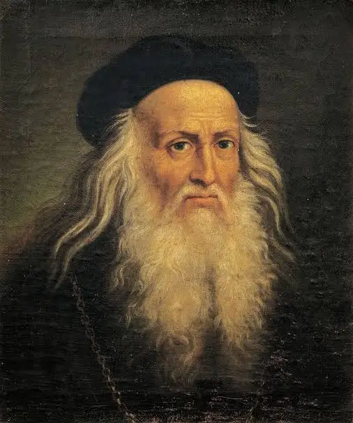
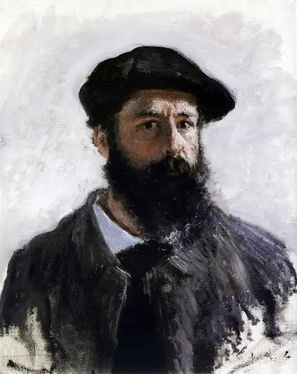

וינסנט ואן גוך

צייר הולנדי פוסט-אימפרסיוניסטי, נחשב לאחד האמנים הגדולים והמשפיעים ביותר בתולדות האמנות המערבית. יצירותיו מתאפיינות בצבעים עזים, משיכות מכחול אקספרסיביות ועומק רגשי רב.
הכירו את שלושת האמנים המרכזיים שחייהם ויצירותיהם מוצגים במוזיאון שלנו.

צייר הולנדי פוסט-אימפרסיוניסטי, נחשב לאחד האמנים הגדולים והמשפיעים ביותר בתולדות האמנות המערבית. יצירותיו מתאפיינות בצבעים עזים, משיכות מכחול אקספרסיביות ועומק רגשי רב.

איש אשכולות איטלקי מתקופת הרנסנס. הצטיין בציור, פיסול, אדריכלות, מדע והנדסה. יצירותיו, ובראשן המונה ליזה, נחשבות ליצירות המופת המוכרות והנחקרות ביותר בעולם.

צייר צרפתי ואחד ממייסדי זרם האימפרסיוניזם. התמקד בציור נופים בחיק הטבע, תוך שימת דגש על השפעת האור והשינויים באטמוספירה בשעות השונות של היום.